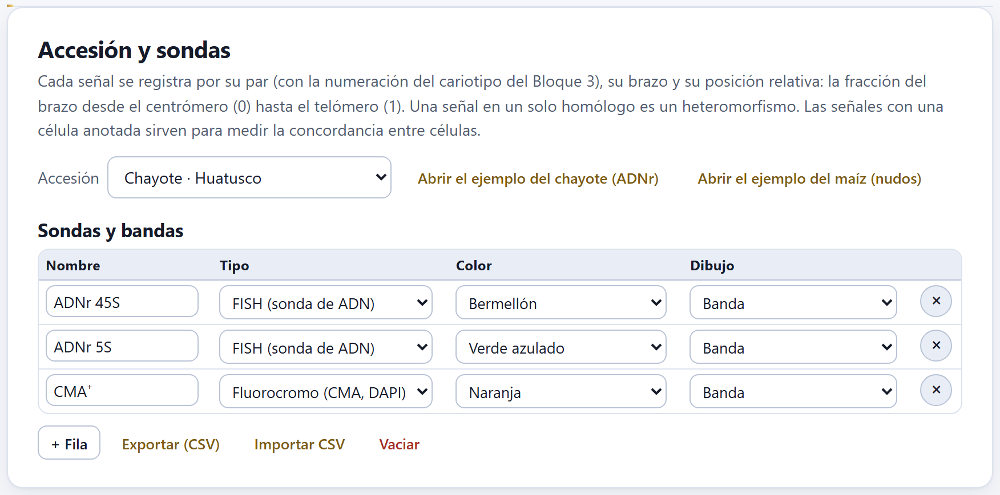
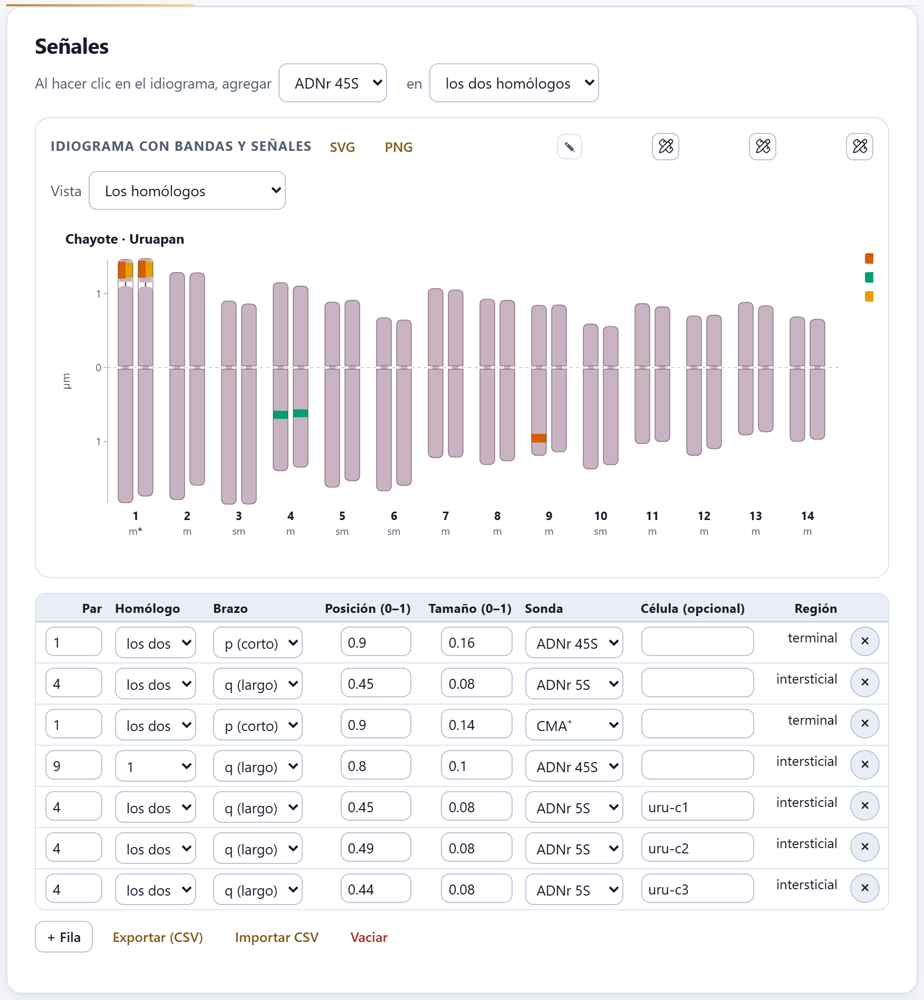
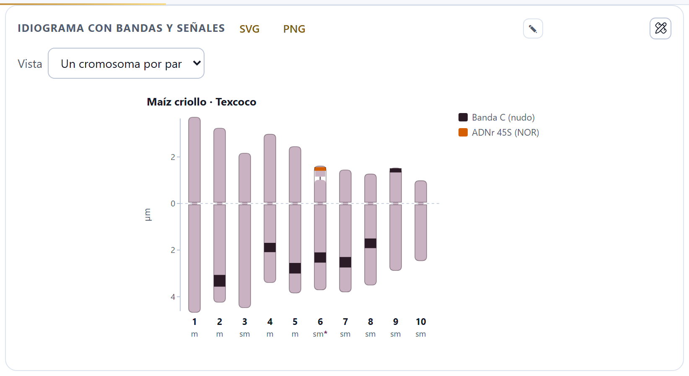
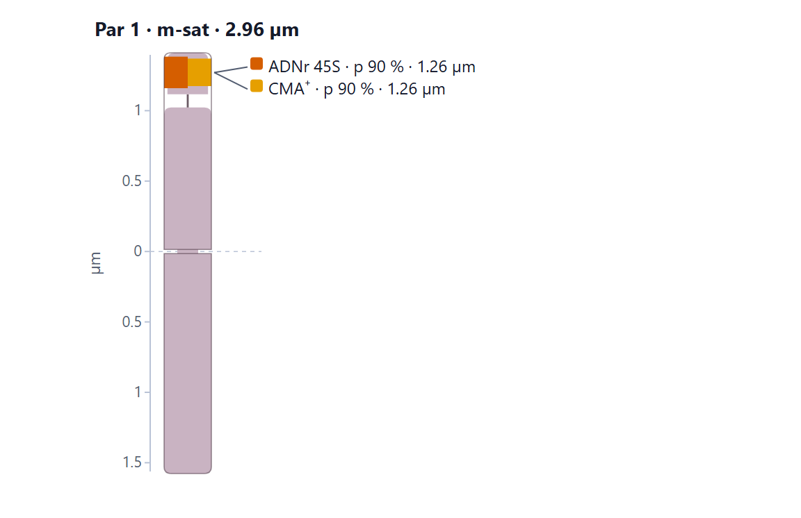
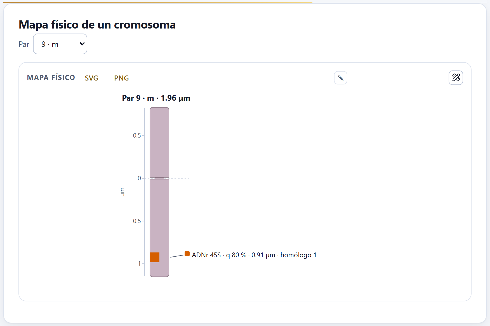
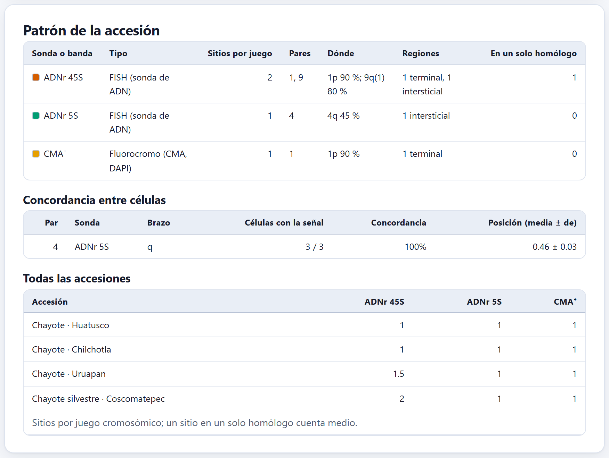

Dos cariotipos con la misma fórmula pueden ser distintos: las bandas de heterocromatina, los fluorocromos y las sondas de ADN marcan sitios que la morfología no ve. Este bloque registra cada señal por su par, su brazo y su posición, la dibuja sobre el idiograma del Bloque 3, arma el mapa físico de un cromosoma y resume el patrón de cada accesión, su concordancia entre células y los sitios de cada sonda en todas las accesiones.
El capítulo usa dos ejemplos, los dos simulados. El del chayote (Sechium edule) tiene cuatro accesiones con ADNr 45S y CMA⁺ en el satélite del par 1, ADNr 5S en el brazo largo del par 4, un sitio de 45S de más en un solo homólogo del par 9 en Uruapan, y la señal 5S registrada además célula por célula. El del maíz trae los nudos heterocromáticos y la región organizadora del nucléolo (NOR) como bandas.
Una señal sólo tiene sentido sobre un cariotipo: por eso el bloque trabaja con la numeración de pares del Bloque 3, y una accesión sin cariotipo no puede dibujar su idiograma (aunque sí guardar sus señales).
La tarjeta Accesión y sondas tiene el selector Accesión y dos botones que abren los ejemplos: Abrir el ejemplo del chayote (ADNr) y Abrir el ejemplo del maíz (nudos). Al entrar, el bloque elige la primera accesión que tenga señales. Su texto resume la convención de la app: cada señal se registra por su par, su brazo y su posición relativa, la fracción del brazo desde el centrómero (0) hasta el telómero (1).
Debajo, la tabla Sondas y bandas define qué se puede marcar en todo el proyecto, con cuatro columnas:
Un proyecto nuevo empieza con seis: Banda C, CMA⁺, DAPI⁺, ADNr 45S, ADNr 5S y Telómero (este último dibujado como puntos). Puedes renombrarlas, borrarlas o agregar las tuyas con + Fila; una sonda nueva se llama «Sonda nueva», es de tipo FISH y sale en celeste.

La banda C tiñe la heterocromatina constitutiva; los fluorocromos la distinguen por su composición: la cromomicina A₃ (CMA⁺) brilla en la rica en GC, como la de muchas NOR, y el DAPI (DAPI⁺) en la rica en AT (Guerra 2000). La FISH localiza una secuencia concreta con una sonda marcada: los genes ribosomales 45S y 5S son las sondas más usadas en plantas porque dan pocos sitios, grandes y fáciles de comparar (Jiang y Gill 2006; Schwarzacher y Heslop-Harrison 2000). La GISH usa todo el genoma de un progenitor como sonda para reconocer sus cromosomas en un híbrido.
Las señales se escriben en una tabla o se ponen con un clic sobre el idiograma. Las dos vías llenan la misma tabla.
La tabla de señales muestra las de la accesión elegida, con estas columnas:
| Columna | Qué lleva |
|---|---|
| Par | El número del par en el cariotipo del Bloque 3. |
| Homólogo | los dos, o 1 a 4 si la señal está en un solo homólogo (un heteromorfismo). |
| Brazo | p (corto) o q (largo). |
| Posición (0–1) | El centro de la señal como fracción del brazo, del centrómero (0) al telómero (1). |
| Tamaño (0–1) | Su extensión, también como fracción del brazo (0.08 si no se dice). |
| Sonda | Una de la tabla Sondas y bandas. |
| Célula (opcional) | Vacía, la señal es del patrón de la accesión; con el nombre de una célula, es una observación de esa célula. |
| Región | La calcula la app: proximal, intersticial o terminal. |
| Si posición < 1/3 del brazo | entonces proximal, cerca del centrómero. |
| Si 1/3 ≤ posición ≤ 0.8 | entonces intersticial. |
| Si posición > 0.8 | entonces terminal, cerca del telómero. |
Una señal justo en 0.8 cuenta como intersticial, como el 45S del par 9 de Uruapan.

1 2 3 4 5uru-c1 a uru-c3).Elige la sonda en Al hacer clic en el idiograma, agregar y, en en, si va en los dos homólogos, el homólogo 1 o el homólogo 2. Un clic sobre un cromosoma del idiograma agrega una fila: el brazo es el del lado del centrómero donde hiciste clic y la posición la distancia al centrómero como fracción de ese brazo, redondeada a centésimas. Un aviso confirma el par, el brazo y la posición. En la vista Los homólogos el clic cae sobre un homólogo concreto y la señal queda en ése, sin importar lo que diga en. Después puedes afinar la posición o el tamaño en la tabla.
El selector Vista del idiograma cambia entre Un cromosoma por par, con las medias de los pares, y Los homólogos, cada homólogo con sus propias medidas. La figura Idiograma con bandas y señales se descarga en SVG o PNG y se edita como las demás. Si la accesión no tiene cariotipo, la tarjeta lo dice: el idiograma necesita las mediciones del Bloque 2.

El mapa físico dibuja un solo par en grande, con una regla en micras desde el centrómero y cada señal rotulada: su sonda, su brazo, su posición en porcentaje del brazo, su distancia al centrómero en micras y, si es un heteromorfismo, el homólogo.
Elige el par en Par; cada opción dice su número, su clase y, si lo tiene, «-sat». El título del dibujo repite el par, la clase y la longitud total. Es la figura que se pone en un artículo cuando un cromosoma tiene varias señales juntas, porque los rótulos se apartan unos de otros para no encimarse.


La posición relativa no cambia con la condensación: el 45S del par 1 está al 90 % del brazo corto en las tres accesiones cultivadas aunque el brazo mida distinto en cada una. Por eso es la que se compara. Las micras dependen del brazo medido y sirven para ubicar la señal en la figura de esa accesión.
El patrón de una accesión son sus señales sin célula. Si una combinación de par, sonda, brazo y homólogo sólo se registró célula por célula, la app la completa con la posición media de esas células; así el idiograma y las tablas no se quedan sin la señal.
La tabla Patrón de la accesión, en la tarjeta del mismo nombre, tiene una fila por sonda con al menos un sitio:

En esta tabla, el sitio del par 9 de Uruapan cuenta como uno: Sitios por juego da 2 para el 45S. En la tabla Todas las accesiones (sección 7.5) y en la matriz del Bloque 8, en cambio, un sitio en un solo homólogo cuenta medio, y el 45S de Uruapan da 1.5. Si citas el número de sitios, di cuál de las dos cuentas usas; la columna En un solo homólogo dice cuántos son heteromorfismos.
En Coscomatepec, el ADNr 45S tiene dos sitios terminales, en los pares 2 y 3 (3p 90 % y 2p 85 %), y el CMA⁺ uno en el par 3. El par que lleva el satélite con 45S y CMA⁺ es aquí el 3 y no el 1: la fusión de dos pares de la base dejó dos cromosomas más largos que pasan al principio del cariotipo, y la numeración del Bloque 3 va por longitud. Al comparar accesiones, conviene comparar los sitios por su marca y su posición, no por el número del par.
Una señal que aparece en todas las células es un rasgo de la accesión; una que aparece en una sola puede ser un artefacto de la hibridación. La tabla Concordancia entre células mide eso con las señales que tienen una célula anotada.
Agrupa esas señales por par, sonda y brazo y da, para cada grupo, las Células con la señal sobre el total de células con alguna señal registrada, la Concordancia en porcentaje y la Posición (media ± de) entre células. Si la accesión no tiene señales célula por célula, la tabla lo dice. En el ejemplo, la señal 5S del par 4 está en las tres células de cada accesión (100 %), con posición 0.47 ± 0.03 en Huatusco, 0.42 ± 0.03 en Chilchotla, 0.46 ± 0.03 en Uruapan y 0.47 ± 0.03 en la silvestre.
La tabla Todas las accesiones cruza las accesiones con señales y las sondas usadas: cada celda es el número de sitios por juego cromosómico, con un sitio en un solo homólogo contado como medio, como dice su pie. En el chayote, el ADNr 45S da 1 en Huatusco y Chilchotla, 1.5 en Uruapan y 2 en la silvestre; el 5S y el CMA⁺ dan 1 en las cuatro. Estas cifras pasan a la matriz del Bloque 8 como variables «Sitios …» (sección 8.1).
| Si la concordancia de una señal es baja | entonces revisa las preparaciones antes de darla como rasgo de la accesión. |
| Si la desviación de la posición entre células es grande | entonces la señal se midió en cromosomas con distinta condensación o se confundieron pares. |
| Si un sitio está en un solo homólogo | entonces es un heteromorfismo: confírmalo en varias células antes de interpretarlo como polimorfismo de la población. |
| Si dos accesiones con la misma fórmula difieren en sus sitios | entonces las señales distinguen lo que la morfología no; llévalas a la comparación del Bloque 8. |
Guías para interpretar, no leyes.
«Esta accesión no tiene cariotipo». El idiograma y el mapa físico necesitan las mediciones del Bloque 2 y el cariotipo del Bloque 3. Las señales se guardan igual.
Una señal no aparece en el idiograma. Su par es mayor que el número de pares del cariotipo, falta el brazo o la posición no es un número; corrígelo en la tabla.
Las señales quedaron en el par equivocado después de cambiar el cariotipo. Las señales guardan el número del par, no el cromosoma: si cambias el orden de los pares en el Bloque 3, revisa la tabla.
El clic agregó la señal en el brazo que no era. El brazo depende del lado del centrómero donde cae el clic; corrige Brazo y Posición (0–1) en la tabla.
La concordancia no aparece. Ninguna señal de la accesión tiene escrita la Célula (opcional).